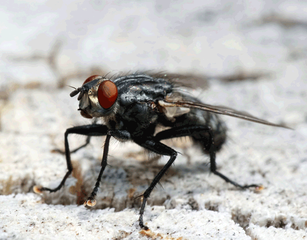
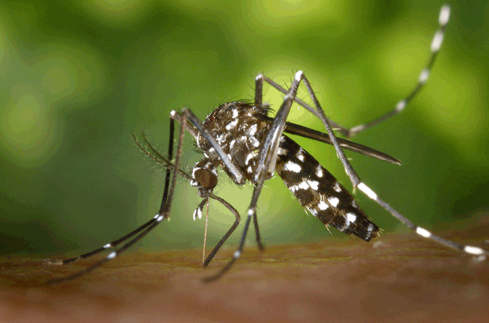
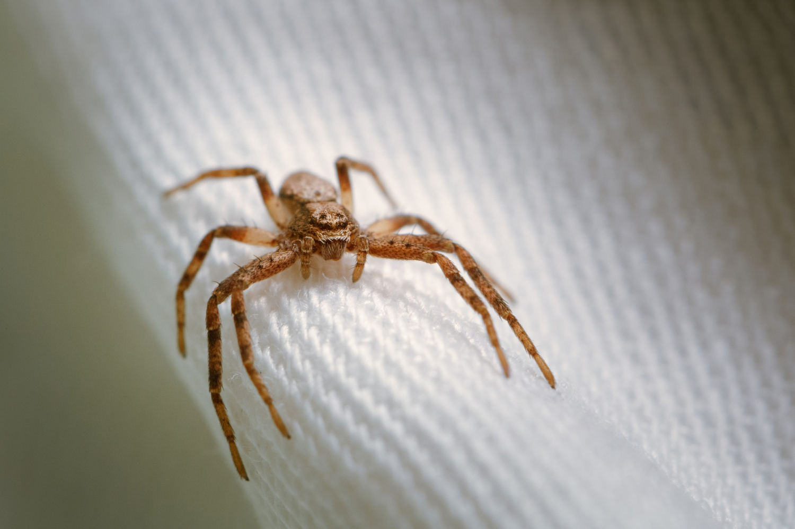
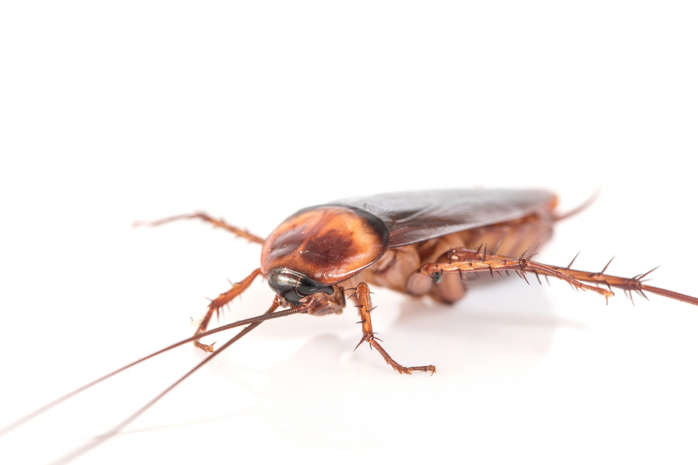

Moscas de la inmundicia

En los hogares argentinos, las moscas de la fruta y de la inmundicia son a menudo una molestia persistente. Las moscas de la fruta, como la Ceratitis capitata, pueden infestar cocinas y despensas, poniendo huevos en frutas maduras. Por otro lado, las moscas de la inmundicia, como la Musca domestica, suelen encontrarse cerca de desechos orgánicos y alimentos descompuestos. Estos insectos, además de ser irritantes, representan riesgos para la salud al transportar patógenos. La adopción de prácticas de higiene, como la eliminación adecuada de residuos y el uso de mosquiteros, es esencial para controlar su presencia en entornos domésticos.
Investigar mas
Mosquitos

Los mosquitos en Argentina son una presencia común, especialmente durante los meses cálidos. Entre las especies más conocidas se encuentran el Aedes aegypti, transmisor del dengue, y el Anopheles, responsable de la propagación de la malaria. Estos insectos, además de causar molestias con sus picaduras, representan un riesgo para la salud pública. Las autoridades argentinas implementan medidas de control, como la fumigación y la concientización sobre la eliminación de criaderos en áreas urbanas y rurales. A pesar de estos esfuerzos, los mosquitos siguen siendo una preocupación, y la prevención personal, como el uso de repelentes, es crucial para evitar enfermedades transmitidas por estos insectos.
Investigar mas
Arañas

En los hogares de Argentina, las arañas domésticas son comunes y desempeñan un papel importante en el control de plagas al alimentarse de insectos no deseados. Entre las especies más frecuentes se encuentra la Parasteatoda tepidariorum, conocida como la araña del rincón. Aunque su mordedura generalmente no es peligrosa para los humanos, su presencia puede generar inquietud. Para prevenir la proliferación, se recomienda mantener una limpieza regular, sellar grietas y rincones, y reducir la presencia de insectos, su principal fuente de alimentación. A pesar de su beneficio en el control de plagas, algunas personas prefieren tomar medidas para evitar encuentros no deseados.
Investigar mas
Cucaracha

La cucaracha doméstica, como la Periplaneta americana, es una presencia común en hogares de Argentina. Adaptadas a diversos ambientes, estas insectos son resistentes y se alimentan de casi cualquier sustancia orgánica. Su presencia puede ser un problema de higiene, ya que contaminan alimentos y superficies con bacterias y alérgenos. Las estrategias para prevenir infestaciones incluyen mantener una limpieza exhaustiva, almacenar alimentos adecuadamente y sellar posibles puntos de entrada. Además, es crucial abordar cualquier problema de humedad, ya que las cucarachas prosperan en ambientes húmedos. La colaboración con profesionales en control de plagas puede ser esencial para erradicar estas invasiones no deseadas.
Investigar mas